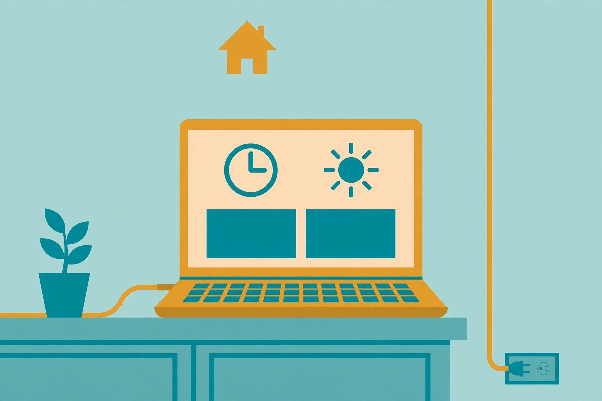

Turn an old laptop into a smart home dashboard: kiosk setup, placement, and the real running cost

88 kilowatt-hours a year. That is the running cost nobody quotes for an always-on home dashboard, worked for a laptop drawing 10 watts around the clock: 10 watts times 24 hours times 365 days, divided by 1,000. At 8 watts the same arithmetic gives about 70 kilowatt-hours a year; at 15 watts, about 131. Multiply the figure for your machine by the per-kilowatt-hour rate on your own electricity bill and the panel's yearly cost stops being a guess. It is also the honest frame for the whole job, because the laptop itself is free. It is already in the closet.
The job in brief
Difficulty: easy. No disassembly, no wiring, nothing opened. Time: about an hour of setup, plus an evening of living with the placement before it is final. Cost: zero using the laptop and a browser you already have; an optional kiosk app licence runs US$20 per screen, checked November 17, 2026. The hire-a-pro line: there is none for a counter setup. The only trade work this job could ever touch is adding a new electrical outlet where the panel lives, and that is a licensed electrician's job, not a weekend task.
A laptop makes a better panel than its reputation suggests. It has a screen larger than most wall tablets, a battery that keeps the dashboard alive through a short power cut, and a keyboard and trackpad built in for the setup work and the occasional adjustment. What it does not have is a wall mount, and this guide does not pretend otherwise: the laptop lives on a counter, a shelf, or a side table, lid open, plugged in.
Tools and materials
- The old laptop, with its correct charger. A panel that browns out on a weak substitute charger helps nobody.
- A plug-in power meter, if you want your own watt figure for the cost math instead of the worked examples above. Optional, and a borrowed one does the job.
- A microfibre cloth and screen cleaner. The screen is about to become furniture; clean it like furniture.
- Cable clips or a short cable channel, so the charger lead runs neatly and nobody catches it with a hip.
- Nothing else. No mount, no bracket, no tools beyond what opens a cable clip package.
Decide what the screen will show
Three routes cover most houses, and the laptop does not care which one it displays, because all three arrive in a browser or a kiosk app.
A smart home dashboard. If the house already runs Home Assistant, the panel is simply a browser pointed at a dashboard. Home Assistant's documentation sets no minimum screen size, processor, memory, or battery requirement for a dashboard device; the choice turns on where the device lives and whether it should behave like a kiosk. An old laptop clears that bar by existing. Build a separate dashboard view for the panel, with the few controls and readings that room actually needs, rather than mirroring the full control panel used on a phone.
A kiosk app. KingKiosk is built for exactly this repurposing: its maker lists old laptops in the kitchen and a Linux laptop in a garage workshop among its standard uses, it runs on Windows 10 and later and on Linux, and it locks the device down so nobody can exit the display or change settings. It works with any automation system that speaks MQTT, including Home Assistant, and it runs entirely on the local network with no subscription. The licence is a one-time US$20 per screen, checked November 17, 2026.
A plain start page. A house with no smart home system still gets a useful panel: a browser start page holding the family calendar, the weather, a shared shopping list, and a photo rotation. No server, no hub, nothing to maintain. This is the route to choose when the goal is a kitchen information screen rather than home control.
| Route | Up-front cost | Needs a hub? | Lockdown | Best for |
|---|---|---|---|---|
| Browser pointed at Home Assistant | $0 | Yes, an existing Home Assistant setup | Browser kiosk flag, or Assigned Access on Windows | Houses already running Home Assistant |
| KingKiosk app | US$20 one time, per screen | No; works with MQTT systems if present | Built in | Mixed widgets: cameras, weather, gauges, clocks on one screen |
| Browser start page | $0 | No | Browser kiosk flag, or Assigned Access on Windows | Calendar, weather, and lists; no home control |
| Buy a used touchscreen panel instead | About US$150 for a used Surface Pro 7, per a May 2026 build write-up | Same dashboard choices still apply | Same kiosk choices still apply | A wall mount is genuinely required |
The setup, step by step
- Start from a clean, updated system. Install the operating system's pending updates, update the browser, and remove personal accounts and files the panel does not need. The machine is about to sit unlocked in a shared room; it should hold nothing private. Check: the laptop boots straight to a desktop with no personal mail, photos, or saved passwords on it.
- Sign the laptop into the dashboard once, in a normal browser window, and confirm the page loads and the controls respond. Fix address and login problems now, at the keyboard, not later through a kiosk. Check: the exact dashboard view the panel will show is on screen, at the address you will use in step 3 or 4.
- For the simple lockdown on Windows, use the browser's own kiosk
mode. A documented build of exactly this kind of panel starts Edge
full screen with the command
msedge.exe --kioskfollowed by the dashboard address; on Linux, Chromium does the same job with its--kioskflag and the address. Put that command in a shortcut in the startup folder so the panel comes back by itself after a restart. Check: reboot the laptop and watch it land on the dashboard, full screen, without a hand touching it. - For the stronger lockdown on Windows, use Assigned Access, Microsoft's
built-in kiosk feature. Microsoft documents that it runs a single app or
Microsoft Edge full screen, restarts the app automatically if it is
closed, and is configured for a local standard user account through
Settings or the
Set-AssignedAccessPowerShell command. Two gates from the same documentation: User Account Control must be enabled, and the supported editions are Pro, Enterprise, Education, and IoT Enterprise. Windows Home is not on the list, so a Home-edition laptop stays with step 3. Check: sign in as the kiosk account and confirm the dashboard opens full screen and the desktop cannot be reached. - Set the power behaviour for a panel, not a laptop. Disable sleep entirely and set the screen to stay on, or to blank only late at night. Then pin system updates to off hours: a panel that reboots itself into a login screen at breakfast is a panel that gets unplugged by Friday. Check: leave the machine alone for longer than the old sleep timer and confirm the dashboard is still showing.
- Place the laptop, plug the charger into a proper outlet, and route the lead along the wall or counter edge with clips. Open the lid to the angle that reads best from standing height in that room, and leave the vents unobstructed. Check: from the doorway, the screen is readable, the cable is invisible to passing feet, and the fan vents have clear air on every side.
Safety and the battery question
Warnings before the habits form, not after. A laptop that lives plugged in keeps its battery at full charge for months, which ages it faster, and for a panel that is an acceptable trade: one documented build notes a used machine's battery worn to about 70 percent and observes that it does not matter for an always-plugged panel, because the battery's job has changed. It is no longer runtime. It is the backup supply that keeps the dashboard up through a short outage and the buffer that lets the machine shut down gracefully instead of dropping dead.
Two checks keep that arrangement safe. First, look at the battery's physical condition before the laptop takes up residence: a trackpad that has started to lift or a base that no longer sits flat can mean a swelling battery, and a machine showing those signs does not become a panel at all until the battery question is settled. Second, keep the charger and its cable genuine and undamaged, out from under rugs, and away from the sink's splash zone in a kitchen. Heat, water, and a frayed cable are the whole risk list for this job; all three are handled by placement, not by skill.
Three ways this job goes wrong
The panel signs itself out. A dashboard left on an administrator account, or a browser profile that expires its session, eventually presents a login screen to a room full of people. The fix is structural: a dedicated standard account for the panel, signed in once, with the kiosk lockdown from step 3 or 4 holding it there.
The 2 a.m. reboot. Updates left on their default schedule restart the machine overnight and the panel wakes to a desktop or a login prompt. Step 5 exists because of this mistake: updates pinned to off hours, and a startup route that returns the dashboard without help.
The wrong room. A dashboard placed where nobody passes it becomes furniture within a month, and a screen left at full brightness in a bedroom becomes an annoyance within a night. Place it on a route the household already walks, kitchen counter or hallway shelf, and let the screen blank overnight rather than glow.
What success looks like
Stand in the doorway of the room a week later. The dashboard is showing the view you built, current to the minute, on a screen that came back by itself after the last update reboot. A tap or a click on a control works, the kiosk account cannot reach the desktop, and the charger lead has survived the week unclipped by nobody and tripped over by nobody. The power meter, if you fitted one, has given you the real watt figure, and the yearly arithmetic from the top of this guide now runs on your number instead of the worked example. That is the whole job: an old laptop, visibly employed, at a running cost you can state.
— Tom Reilly, Home & DIY Writer